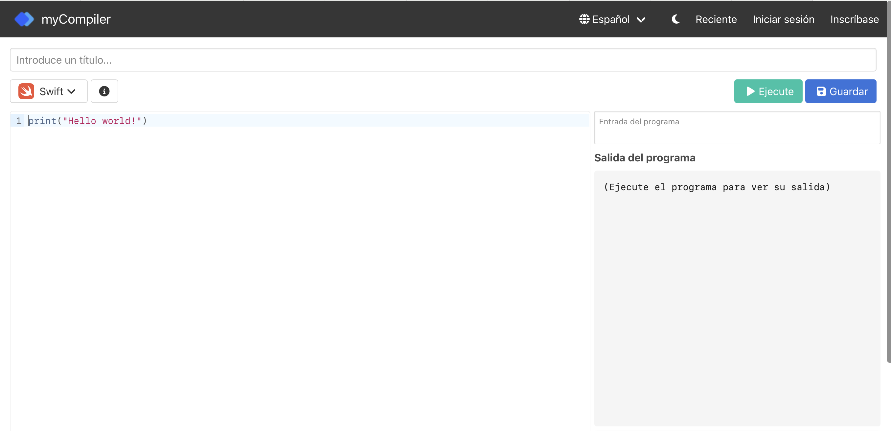
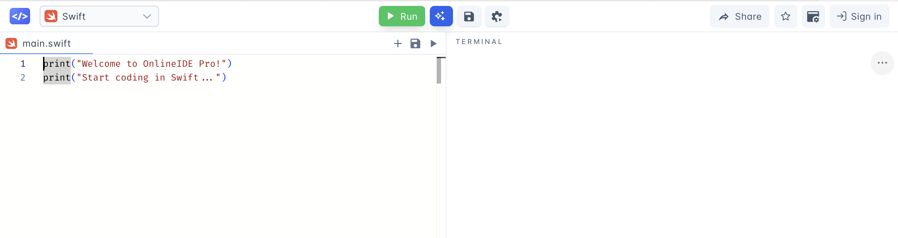
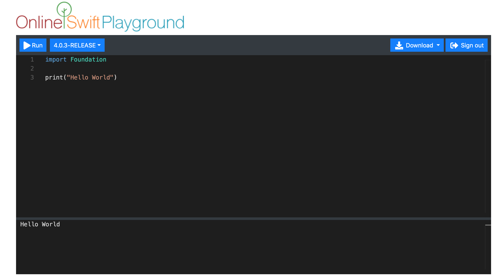
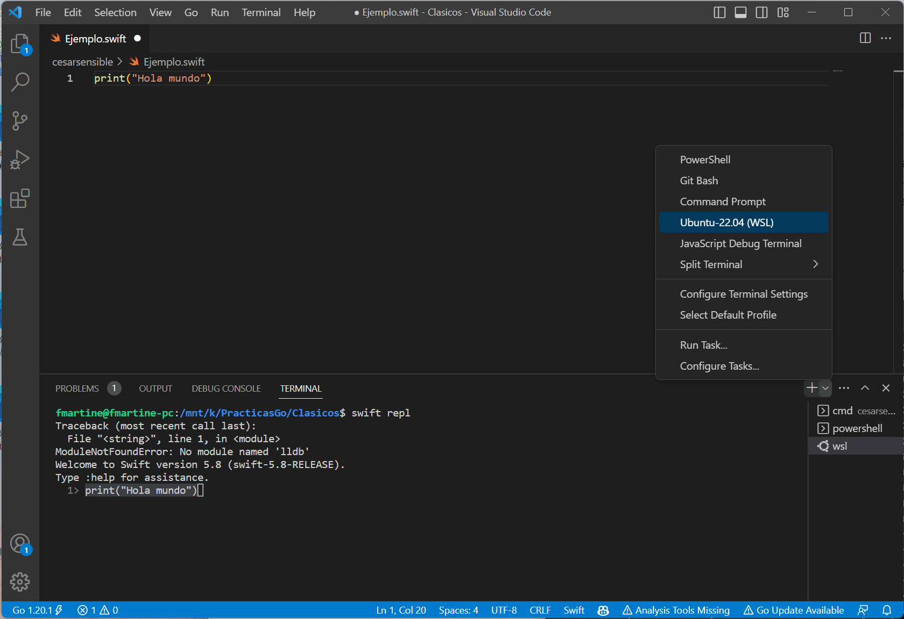
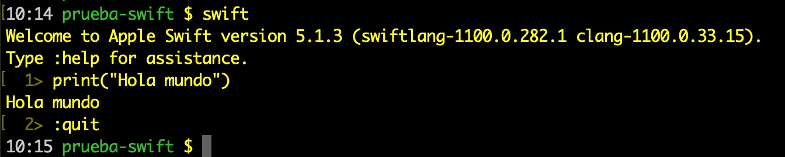
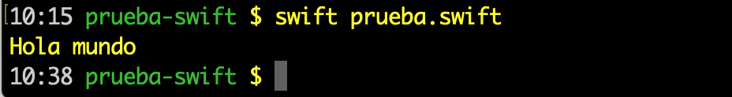
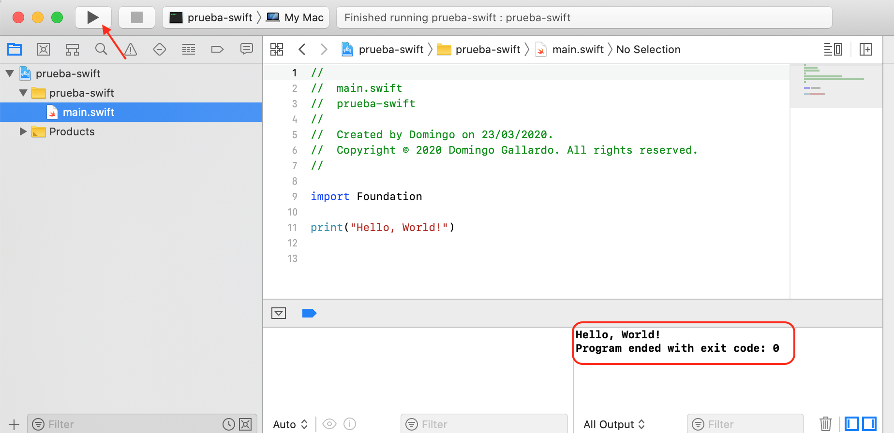

Seminar 2: Swift Seminar¶
The Swift Programming Language¶
Swift is a compiled, general-purpose, multi-paradigm programming language developed by Apple. Swift was introduced at Apple's Worldwide Developers Conference (WWDC) in 2014. During 2014, version 1.2 was developed, and at WWDC 2015 Swift 2 was presented, a major update to the language. It was initially a proprietary language, but on December 3, 2015 it became open source under the Apache 2.0 license for Apple platforms and Linux. Changes to the language are proposed and discussed by the community through a process called Swift evolution.
The following description is taken from the Swift GitHub repository:
Swift is a high-performance systems programming language. It has a clean and modern syntax, offers seamless access to existing C and Objective-C code and frameworks, and is memory safe by default.
Although inspired by Objective-C and many other languages, Swift is not itself a C-derived language. As a complete and independent language, Swift packages core features like flow control, data structures, and functions, with high-level constructs like objects, protocols, closures, and generics. Swift embraces modules, eliminating the need for headers and the code duplication they entail.
In the first years of the language, very strong changes were introduced, increasing the major version number in consecutive years and breaking source compatibility with previous versions. However, in recent years the language has matured, and we have spent several years with only minor-version increments within major version 5. At present, version 5.8 has been released, but you can follow the course and the labs perfectly well with any 5.x version.
Running Swift Programs¶
It is possible to download the Swift compiler on macOS (using the Xcode development environment) or Linux.
Below we explain different ways to run Swift programs.
Online Execution¶
There are several online sites where it is possible to run Swift code. We recommend:



Installation on Ubuntu Linux¶
Official Swift distributions are available for Linux 22.04 and 24.04.
Briefly, the installation steps are the following:
-
Confirm that the Linux installation packages are up to date:
$ sudo apt-get update $ sudo apt-get upgrade -
Install the dependencies listed on the official Apple website using
apt-get install. You will need superuser permissions to do this:sudo apt-get install.Warning
Depending on your Linux version, you will need to download different dependencies. Check carefully on Apple's page which exact
apt-get installcommand you must run for your version. See the dependencies for your version on the official Swift page. -
Download the desired version and platform (
swift-<VERSION>-<PLATFORM>.tar.gz). For example, the following commands download Swift version 6.0.3 for the different Ubuntu distributions.-
Ubuntu 22.04:
$ wget https://download.swift.org/swift-6.0.3-release/ubuntu2204/swift-6.0.3-RELEASE/swift-6.0.3-RELEASE-ubuntu22.04.tar.gz -
Ubuntu 24.04:
$ wget https://download.swift.org/swift-6.0.3-release/ubuntu2404/swift-6.0.3-RELEASE/swift-6.0.3-RELEASE-ubuntu24.04.tar.gz
-
-
Extract the file:
$ tar xzf swift-<VERSION>-<PLATFORM>.tar.gzThis creates the
usr/directory in the location of the archive. You can test whether theswiftcommand works by moving to thebindirectory and running:$ ./swift repl Welcome to Swift version 5.8 Type :help for assistance. 1> print("Hola mundo") Hola mundo 2> :quit $ -
To run
swiftfrom any directory, you must update thePATHor moveusr/bin/swiftto the/usr/bindirectory.$ export PATH=/path/to/usr/bin:"${PATH}"
Installation on Windows¶
You can install our WSL distribution by downloading it from this link.
It is an exported tar copy of a WSL Ubuntu 24.04 distribution prepared with Swift 6.0.3 already installed so that Swift can be run directly. Before proceeding, check that WSL is installed and enabled on your system with the following command in the Windows terminal (PowerShell or CMD):
wsl --list --verbose
This command will show the Linux distributions installed and their status.
If WSL is not installed
If you do not have WSL, you can enable it using PowerShell by running the following command as administrator:
wsl --install
This command installs the latest version of WSL. If WSL is already enabled, the command updates to WSL 2 if necessary and available.
Alternatively, you can enable WSL through the Windows Control Panel:
- Open the Control Panel.
- Go to "Programs".
- Click "Turn Windows features on or off".
- Find "Windows Subsystem for Linux", check it, and click OK.
After enabling WSL, you will be asked to restart your computer.
Steps to import our distribution:
- Create a folder called
UbuntuLPPon a drive with at least 8 GB of capacity. - Download the copy (
UbuntuLPP.tgz) into that folder. - Open a command prompt window (
cmd.exe) and move to that folder (cd [path]\UbuntuLPP). -
Run the following command to import the distribution into WSL 2:
wsl --import UbuntuLPP . UbuntuLPP.tgzWhen importing the distribution with the previous command, the name given to the distribution is
UbuntuLPP(a different name could have been used), and the location where the virtual disk (ext4.vhdx) is unpacked is the directory where the command is executed (the.could have been replaced with a different path). Once the distribution has been imported, the tar file (UbuntuLPP.tgz) can be deleted.Avoid storing the WSL disk in the cloud
Storing WSL virtual disk files in synchronization services such as OneDrive, Drive, or Dropbox can cause access conflicts and errors. To ensure proper operation, store them directly on your computer's hard drive in a local path.
The distribution was created with the user swiftuser as the default
user and administrator, with the password su-LPP-UA (in case you
need it, for example, to run sudo).
Naturally, you can also download WSL Ubuntu from the Microsoft Store (or use a distribution you already have installed) and then install Swift on Ubuntu as explained in the previous section.
Visual Studio Code¶
To edit Swift code, you can use any programming-oriented editor such as Visual Studio Code (VSC) or Atom. We recommend Visual Studio Code.
Recent versions of Visual Studio Code include the official Swift plugin, which provides syntax highlighting and code completion.
To work more comfortably, we can open the integrated terminal: View > Integrated Terminal. We can check that VSC can open a WSL terminal where we can run the previously installed Swift.

You can consult the basic Visual Studio Code concepts and the full manual at this link.
Execution on macOS¶
We can work in two ways: running Swift programs from the terminal or from Xcode.
If you have a Mac, you can try both methods and choose whichever is more convenient.
Running from the Terminal¶
We must install the Xcode Command Line Tools with the following command:
$ xcode-select --install
Once the tools are installed, we can run Swift programs from the terminal interactively.
Open the terminal and type:
$ swift repl
You will see that the Swift interpreter starts and allows you to write and run Swift code:

To edit a Swift program, you can use an editor such as Visual Studio Code, as mentioned earlier, and then run it from the terminal.
$ swift prueba.swift
Hola mundo

Running from Xcode¶
First, you must install Xcode from the Mac App Store.
Once Xcode is installed, you can run a Swift program in two ways: compiling from the terminal or compiling in Xcode.
Compiling from the Terminal¶
In Xcode, you can create a new file using File > New File... and select the macOS > Swift File template.

Select the folder and file name, and then you can write Swift code:

Once the program is saved, you can run it from the terminal:
$ swift prueba.swift
Hola mundo
If there is any compilation error, it will be detected when launching the command from the terminal.


Compiling with Xcode¶
The other way to work is to create a Swift project from Xcode. It is a bit more complex because it requires knowing a few more Xcode commands, but it has the advantage that Xcode shows errors directly in the editing window.
In Xcode, click File > New Project... and select the macOS > Command Line Tool template.

You can choose any name you want, for example prueba-swift.

Select the location on disk where the project will be saved and you
can start working with it. The main file is called main.swift.
Pressing Run compiles the project and opens a panel showing the
output:

If there is any compilation error, it is detected while writing the code and shown in the editor itself:

A Swift Tour¶
Note
The text of this seminar is a translation of Apple's document A Swift Tour, which presents a quick introduction to the fundamental concepts of the language. In later course topics we will study aspects such as functions, generics, classes, or protocols in more depth.
Tradition suggests that the first program in a new language should print the words "Hello, world!" on the screen. In Swift, this can be done with a single line:
print("Hola, mundo!")
If you have written code in C or Objective-C, this syntax will look
familiar. In Swift, this line of code is a complete program. You do
not need to import a separate library for features such as input,
output, or string handling. Code written at global scope is used as
the entry point of the program, so you do not need a main()
function. You also do not have to write semicolons at the end of
every statement. You can comment lines of code in the same way as in
C.
//
// This is a comment
//
/*
And this is also a comment
*/
This tour gives you enough information to start writing code in Swift by showing how to achieve a variety of programming tasks. Full information about all Swift language elements can be found in the Swift Guide.
Simple Values¶
Use let to create a constant and var to create a variable. The
value of a constant does not need to be known at compile time, but
you must assign it a value exactly once. This means that you can use
constants to name a value that you determine once and then use in
many places.
var miVariable = 42
miVariable = 50
let miConstante = 42
A constant or variable must have the same type as the value you want
to assign to it. However, you do not always have to write the type
explicitly. When a value is provided when creating a constant or
variable, the compiler infers its type. In the previous example, the
compiler infers that myVariable is an integer because its initial
value is an integer.
If the initial value does not provide enough information, or if there is no initial value, specify the type by writing it after the variable, separated by a colon.
let implicitoInteger = 70
let implicitoDouble = 70.0
let explicitoDouble: Double = 70
Note
Throughout the seminar, small exercises are proposed that you should do yourself to practice the language a bit more. You will find them in the blocks headed with "Experiment".
Experiment 1
Create a constant with the explicit type Float and the value 4.
Values are never implicitly converted to another type. If you need to convert a value to a different type, explicitly construct an instance of the desired type.
let etiqueta = "El ancho es "
let ancho = 94
let anchoEtiqueta = etiqueta + String(ancho)
Experiment 2
Try removing the conversion to String in the last line. What
error do you get? Include it translated in the code using a
comment.
There is an even simpler way to include values in strings: write the
value inside parentheses and put a backslash (\) before the
parentheses. For example:
let manzanas = 3
let naranjas = 5
let resumenManzanas = "Tengo \(manzanas) manzanas."
let resumenFrutas = "Tengo \(manzanas + naranjas) frutas."
Experiment 3
Use \() to print a string containing a floating-point
calculation and, in another statement, to print a string that
includes someone's name in a greeting.
Create arrays and dictionaries using square brackets ([]), and
access their elements by writing the index or key inside the brackets.
A trailing comma after the last element is allowed.
var listaCompra = ["huevos", "agua", "tomates", "pan"]
listaCompra[1] = "botella de agua"
var trabajos = [
"Malcolm": "Capitán",
"Kaylee": "Mecánico",
]
trabajos["Jayne"] = "Relaciones públicas"
To create an empty array or dictionary, use the initialization syntax.
let arrayVacio = [String]()
let diccionarioVacio = [String: Float]()
If the type information can be inferred, you can write an empty array
as [] and an empty dictionary as [:]; for example, when setting a
new value for a variable or passing an argument to a function.
listaCompra = []
trabajos = [:]
You can find more information about working with arrays in the corresponding section of the Swift Guide.
Tuples¶
A tuple groups several values into a single compound value.
let http404Error = (404, "Not Found")
The type of the tuple is (Int, String).
To get the values from the tuple, we can decompose it. If we want
to ignore one part, we can use an underscore (_).
let (statusCode, statusMensaje) = http404Error
let (soloStatusCode, _) = http404Error
We can also access them by position:
print("El código de estado es \(http404Error.0)")
Flow Control¶
Use if and switch to make conditionals, and use for-in, for,
while, and repeat-while to create loops. Parentheses around
conditions or loop variables are optional. Braces are required around
the body.
let puntuacionesIndividuales = [75, 43, 103, 87, 12]
var puntuacionEquipo = 0
for puntuacion in puntuacionesIndividuales {
if puntuacion > 50 {
puntuacionEquipo += 3
} else {
puntuacionEquipo += 1
}
}
print(puntuacionEquipo)
In an if statement, the condition must be a boolean expression.
This means code such as if puntuacion { ... } is an error, not an
implicit comparison against zero as allowed in C.
You can use if and let together to work with values that may be
missing. These values are represented as optionals. An optional value
either contains a value or contains nil to indicate that the value
is missing. Write a question mark (?) after the type of a value to
mark it as optional.
var cadenaOpcional: String? = "Hola"
print(cadenaOpcional == nil)
var nombreOpcional: String? = "John Appleseed"
var saludo = "Hola!"
if let nombre = nombreOpcional {
saludo = "Hola, \(nombre)"
}
print(saludo)
Experiment 4
Change nombreOpcional to nil. What greeting do you get? Add an
else clause that sets a different greeting if nombreOpcional is
nil.
If the optional value is nil, the condition is false and the code
inside the braces is skipped. Otherwise, the optional value is
unwrapped and assigned to the constant after let, which makes the
unwrapped value available inside the code block.
Another way to handle optional values is to provide a default value
using the ?? operator. If the optional value is missing, the
default value is used instead.
let nombrePila: String? = nil
let nombreCompleto: String = "John Appleseed"
let saludoInformal = "¿Qué tal, \(nombrePila ?? nombreCompleto)?"
switch statements support any kind of data and a wide variety of
comparison operations; they are not limited to integers and equality
tests.
let verdura = "pimiento rojo"
switch verdura {
case "zanahoria":
print("Buena para la vista.")
case "lechuga", "tomates":
print("Podrías hacer una buena ensalada.")
default:
print("Siempre puedes hacer una buena sopa.")
}
Experiment 5
Try removing the default case. What error do you get?
After executing the code inside the matching case, the program exits
the switch statement. Execution does not continue with the next
case, so there is no need to break out of the switch at the end of
each case.
Use for-in to iterate over items in a dictionary by providing a
pair of names to use for each key-value pair. Dictionaries are
unordered collections, so their keys and values are iterated in an
arbitrary order.
let numerosInteresantes = [
"Primos": [2, 3, 5, 7, 11, 13],
"Fibonacci": [1, 1, 2, 3, 5, 8],
"Cuadrados": [1, 4, 9, 16, 25],
]
var mayor = 0
for (clase, numeros) in numerosInteresantes {
for num in numeros {
if num > mayor {
mayor = num
}
}
}
print(mayor)
Experiment 6
Add another variable to track which class of number is the largest.
Use while to repeat a block of code until a condition changes. A
loop condition can also be at the end, ensuring that the loop runs at
least once.
var n = 2
while n < 100 {
n *= 2
}
print(n)
var m = 2
repeat {
m *= 2
} while m < 100
print(m)
You can define an index in a loop using ..< to build a range of
indexes.
var total = 0
for i in 0..<4 {
total += i
}
print(total)
Use ..< to build a range that omits its upper value, and use ...
to build a range that includes both values.
Functions and Closures¶
Use func to declare a function. Use -> to separate the parameter
names and types from the return type of the function.
func saluda(nombre: String, dia: String) -> String {
return "Hola \(nombre), hoy es \(dia)."
}
print(saluda(nombre: "Bob", dia: "Martes"))
Experiment 7
Remove the day parameter. Add a parameter to include today's meal in the greeting.
By default, functions use the parameter names as argument labels. It
is possible to define a label by writing it before the parameter
name, or to use no label by writing _:
func saluda(_ nombre: String, el dia: String) -> String {
return "Hola \(nombre), hoy es \(dia)."
}
print(saluda("Bob", el: "Martes"))
Functions can return any type of data, such as tuples.
func calculaEstadisticas(puntuaciones: [Int]) ->
(min: Int, max: Int, sum: Int) {
var min = puntuaciones[0]
var max = puntuaciones[0]
var sum = 0
for puntuacion in puntuaciones {
if puntuacion > max {
max = puntuacion
} else if puntuacion < min {
min = puntuacion
}
sum += puntuacion
}
return (min, max, sum)
}
let estadisticas = calculaEstadisticas(puntuaciones: [5, 3, 100, 3, 9])
print(estadisticas.sum)
print(estadisticas.2)
Functions can also have a variable number of arguments, grouping all of them into an array.
func suma(numeros: Int...) -> Int {
var suma = 0
for num in numeros {
suma += num
}
return suma
}
print(suma())
print(suma(numeros: 42, 597, 12))
Experiment 8
Write a function that computes the mean of its arguments.
Functions can be nested. Nested functions can access variables declared in the outer function. You can use nested functions to organize code inside a function that is long or complicated.
func devuelveQuince() -> Int {
var y = 10
func suma() {
y += 5
}
suma()
return y
}
print(devuelveQuince())
Functions are a first-class type. This means that a function can return another function as its result.
func construyeIncrementador() -> ((Int) -> Int) {
func sumaUno(numero: Int) -> Int {
return 1 + numero
}
return sumaUno
}
var incrementa = construyeIncrementador()
print(incrementa(7))
We can modify the devuelveQuince example so that it returns a
modified version of the suma function. We call that function
devuelveSuma.
func devuelveSuma() -> (() -> Int) {
var y = 10
func suma() -> Int {
y += 5
return y
}
return suma
}
let f = devuelveSuma()
print(f())
print(f())
A function can take another function as one of its arguments.
func cumpleCondicion(lista: [Int], condicion: (Int) -> Bool) -> Bool {
for item in lista {
if condicion(item) {
return true
}
}
return false
}
func menorQueDiez(numero: Int) -> Bool {
return numero < 10
}
var numeros = [20, 19, 7, 12]
print(cumpleCondicion(lista: numeros, condicion: menorQueDiez))
Functions are actually a special case of closures: blocks of code
that can be called later. Code in a closure has access to things such
as variables and functions that were available in the scope where the
closure was created, even if the closure is in a different scope when
it runs. You already saw an example of this with nested functions.
You can write a closure by surrounding code with braces ({}). Use
in to separate the arguments from the body.
numeros.map({
(numero: Int) -> Int in
let resultado = 3 * numero
return resultado
})
Experiment 9
Rewrite the closure so that it returns zero for all odd numbers.
You have quite a few options for writing closures more concisely. When the type of a closure is already known, you can omit the type of its parameters, the return type, or both. Closures written as a single statement implicitly return the value of that statement.
let numerosMapeados = numeros.map({ numero in 3 * numero })
print(numerosMapeados)
You can refer to parameters by number instead of by name; this approach is especially useful in very short closures. A closure passed as the last argument can appear immediately after the parentheses. When a closure is the only argument to a function, you can omit the parentheses entirely.
let numerosOrdenados = numeros.sorted { $0 > $1 }
print(numerosOrdenados)
Objects and Classes¶
Use class followed by the class name to create a class. A property
declaration in a class is written the same way as a constant or
variable declaration, except that it is in the context of a class. In
the same way, method declarations are written the same way as
functions.
class Figura {
var numeroDeLados = 0
func descripcionSencilla() -> String {
return "Una figura con \(numeroDeLados) lados."
}
}
Experiment 10
Add a constant property with let, and add another method that
takes an argument.
Create an instance of a class by putting parentheses after the class name. Use dot syntax to access the properties and methods of the instance.
var figura = Figura()
figura.numeroDeLados = 7
var descripcionFigura = figura.descripcionSencilla()
This version of the Figura class is missing something important: an
initializer to set up the class when an instance is created. Use
init to create one.
class FiguraConNombre {
var numeroDeLados: Int = 0
var nombre: String
init(nombre: String) {
self.nombre = nombre
}
func descripcionSencilla() -> String {
return "Una figura con \(numeroDeLados) lados."
}
}
Notice how self is used to distinguish the nombre property from
the nombre initializer argument. Arguments to the initializer are
passed as in a function call when you create an instance of the
class. Every property needs an assigned value, either in its
declaration (such as numeroDeLados) or in the initializer (such as
nombre).
Subclasses include their superclass name after the subclass name, separated by a colon. There is no requirement that classes must be subclasses of some root class, so you can omit a superclass if needed.
Methods in a subclass that override the superclass implementation are
marked with override; accidentally overriding a method without
override is detected by the compiler as an error. The compiler also
detects methods marked with override that do not actually override
any method in the superclass.
class Cuadrado: FiguraConNombre {
var longitudLado: Double
init(longitudLado: Double, nombre: String) {
self.longitudLado = longitudLado
super.init(nombre: nombre)
numeroDeLados = 4
}
func area() -> Double {
return longitudLado * longitudLado
}
override func descripcionSencilla() -> String {
return "Un cuadrado con lados de longitud \(longitudLado)."
}
}
let test = Cuadrado(longitudLado: 5.2, nombre: "Mi cuadrado de prueba")
print(test.area())
print(test.descripcionSencilla())
Experiment 11
Build another subclass of FiguraConNombre called Circulo that
takes a radius and a name as arguments to its initializer.
Implement an area() method and descripcionSencilla() in the
Circulo class.
In addition to simple stored properties, properties can have a getter and a setter.
class TrianguloEquilatero: FiguraConNombre {
var longitudLado: Double = 0.0
init(longitudLado: Double, nombre: String) {
self.longitudLado = longitudLado
super.init(nombre: nombre)
numeroDeLados = 3
}
var perimetro: Double {
get {
return 3.0 * longitudLado
}
set {
longitudLado = newValue / 3.0
}
}
override func descripcionSencilla() -> String {
return "Un triangulo equilátero con lados de longitud \(longitudLado)."
}
}
var triangulo = TrianguloEquilatero(longitudLado: 3.1, nombre: "un triángulo")
print(triangulo.perimetro)
triangulo.perimetro = 9.9
print(triangulo.longitudLado)
In the perimetro setter, the new value has the implicit name
newValue. You can provide an explicit name in parentheses after
set.
Note that the initializer of the TrianguloEquilatero class has
three distinct steps:
- Set the value of the properties declared by the subclass.
- Call the superclass initializer.
- Change the value of the properties defined by the superclass. Any additional work that uses methods, getters, or setters can also be done at this point.
Enumerations and Structures¶
Use enum to create an enumeration. Like classes and other named
types, enumerations can have associated methods.
enum Valor: Int {
case uno = 1
case dos, tres, cuatro, cinco, seis, siete, ocho, nueve, diez
case sota, caballo, rey
func descripcionSencilla() -> String {
switch self {
case .uno:
return "as"
case .sota:
return "sota"
case .caballo:
return "caballo"
case .rey:
return "rey"
default:
return String(self.rawValue)
}
}
}
let carta = Valor.uno
let valorBrutoCarta = carta.rawValue
Experiment 12
Write a function that compares two Valor values by comparing
their raw values.
By default, Swift assigns raw values starting at zero and increasing
them by one each time, but you can change this behavior by
explicitly specifying the values. In the previous example, As is
given a raw value of 1 and the rest are assigned in order. You can
also use strings or floating-point numbers as enumeration raw values.
Use the rawValue property to access the raw value of an
enumeration.
Use the initializer to construct an enumeration value from a raw
value. If the raw value does not exist, the initializer will return
nil.
if let valorConvertido = Valor(rawValue: 3) {
let descripcionTres = valorConvertido.descripcionSencilla()
print(descripcionTres)
}
Enumeration case values are actual values, not just another way of writing their raw values. In fact, in cases where a raw value does not make sense, you do not have to provide one.
enum Palo {
case oros, bastos, copas, espadas
func descripcionSencilla() -> String {
switch self {
case .oros:
return "oros"
case .bastos:
return "bastos"
case .copas:
return "copas"
case .espadas:
return "espadas"
}
}
}
let copas = Palo.copas
let descripcionCopas = copas.descripcionSencilla()
Experiment 13
Add a color() method to Palo that returns "aggressive" for
bastos and espadas, and "reflective" for oros and copas.
Notice the two ways in which we refer to the copas case of the
previous enumeration: when assigning a value to the constant copas,
we refer to the enumeration case as Palo.copas using its full name
because the constant does not have an explicitly specified type.
Inside the switch, we refer to the enumeration case using the
shortened form .copas because the type of self is already known
to be Palo. You can use the shortened form whenever the type of the
value is already known.
An instance of an enumeration case can have values associated with that instance. Instances of the same enumeration case can have different associated values. You provide the associated values when creating the instance. Associated values and raw values are different: the raw value of an enumeration case is the same for all instances, whereas you provide the associated value when defining the enumeration.
For example, consider the case of making a request to a server for the sunrise and sunset times. The server responds with the information, or with some error information.
enum RespuestaServidor {
case resultado(String, String)
case error(String)
}
let exito = RespuestaServidor.resultado("6:00 am", "8:09 pm")
let fallo = RespuestaServidor.error("Sin queso.")
switch exito {
case let .resultado(salidaSol, puestaSol):
print("La salida del sol es a las \(salidaSol) y la puesta es a \(puestaSol).")
case let .error(error):
print("Fallo... \(error)")
}
Experiment 14
Add a third case to RespuestaServidor and to the switch.
Notice how the sunrise and sunset times are extracted from the
RespuestaServidor enumeration as part of the matching between the
value and the switch cases.
Use struct to create a structure. Structures share many features
with classes, including methods and initializers. One of the most
important differences between structures and classes is that
structures are always copied when you pass them around in your code,
whereas classes are passed by reference.
struct Carta {
var valor: Valor
var palo: Palo
func descripcionSencilla() -> String {
return "El \(valor.descripcionSencilla()) de \(palo.descripcionSencilla())"
}
}
let tresDeEspadas = Carta(valor: .tres, palo: .espadas)
let descripcionTresDeEspadas = tresDeEspadas.descripcionSencilla()
Experiment 15
Add a method to Carta that creates a full deck, with one card
for each combination of value and suit.
Bibliography and References¶
- Documentation about Swift
- The Swift Programming Language (html)
- Swift resources on Apple
- swift.org
- Swift Open Source
- The
swiftrepository on GitHub: main Swift repository containing the Swift compiler source code, the standard library, and SourceKit. - The
swift-evolutionrepository on GitHub: documents related to the continuous evolution of Swift, including goals for upcoming versions and proposals for Swift changes and extensions.
Programming Languages and Paradigms, academic year 2025-26 © Department of Computer Science and Artificial Intelligence, University of Alicante Domingo Gallardo, Cristina Pomares, Antonio Botía, Francisco Martínez